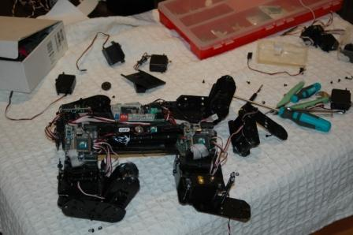

Después de un montón de charlas y demostraciones Pucho sufrió un “accidente laboral” y se le rompió una pata. Hoy hemos empezado la operación de reparación y puesta al día.

!La idea es arreglar el servo roto, actualizar los motores a una versión más potente y modificar la electrónica para aplicar un control por ondas para ver si mejoramos sus movimientos.
Ya os iremos contando las mejoras al respecto.
Andrés